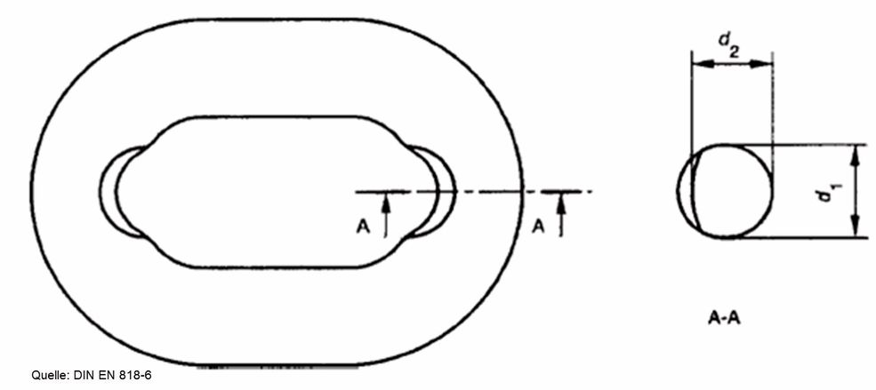

Schäden an oder fehlerhafte Montage von Lastaufnahme- und Anschlagmitteln können zu Unfällen führen. Daher müssen Unternehmer und Unternehmerinnen dafür sorgen, dass die eingesetzten Lastaufnahme- und Anschlagmittel geprüft werden.
Nach § 3 Abs. 6 der Betriebssicherheitsverordnung müssen Arbeitgeberinnen und Arbeitgeber Art, Umfang und Fristen erforderlicher Prüfungen der Arbeitsmittel ermitteln. Bei diesen Prüfungen sollen sicherheitstechnische Mängel systematisch erkannt und abgestellt werden.
Arbeitgeber und Arbeitgeberinnen legen außerdem die Voraussetzungen fest, die die von ihnen mit der Prüfung beauftragten Personen erfüllen müssen (zur Prüfung befähigte Personen " bisher Sachkundige).
Siehe auch TRBS 1201 und TRBS 1203.
Werden bei einer Prüfung eines Lastaufnahme- oder Anschlagmittels sicherheitsrelevante Mängel festgestellt, darf der Unternehmer oder die Unternehmerin das Lastaufnahme- oder Anschlagmittel nicht weiterverwenden lassen. Vor Wiederverwendung hat der Unternehmer oder die Unternehmerin die Mängel beseitigen zu lassen.
Für die Prüfungen von Tragmitteln, hier Lasthaken des Hebezeugs, fest eingebaute Greifer, Zangen, Traversen und hnliches, wird auf die Bestimmungen des entsprechenden Regelwerks zum Hebezeug verwiesen.
Siehe auch DGUV Information 209-013 "Anschläger" Anhang A1 Quellen- und Literaturverzeichnis.
Die folgenden Prüfungen haben sich bei der langjährigen Präventionsarbeit und aufgrund der dabei gemachten Erfahrungen im sicheren Betrieb von Lastaufnahme- und Anschlagmitteln bewährt.
Lastaufnahme- und Anschlagmittel, deren Sicherheit von den Montagebedingungen abhängt, sind vor der ersten Verwendung von einer zur Prüfung befähigten Person zu prüfen.
Vor der ersten Verwendung der Lastaufnahme- und Anschlagmittel müssen die erforderlichen Unterlagen (z. B. Betriebsanleitung) vollständig vorliegen. Wenn augenfällige Mängel festgestellt werden (z. B. Beschädigungen, Funktionsstörungen) muss sichergestellt werden, dass eine zur Prüfung befähigte Person eine Prüfung durchführt.
Je nach den Einsatzbedingungen der Lastaufnahme- und Anschlagmittel können Prüfungen in kürzeren Abständen erforderlich sein. Das gilt zum Beispiel bei besonders häufigem Einsatz, erhöhtem Verschleiß, bei Korrosion oder Hitzeeinwirkung oder wenn mit erhöhter Störanfälligkeit zu rechnen ist.
Je nach den Einsatzbedingungen können Prüfungen in kürzeren Abständen erforderlich sein. Das gilt zum Beispiel bei Beschädigungen der Umhüllung. Schon bei geringer Beschädigung der Umhüllung kann infolge eingedrungener Feuchtigkeit auch bei verzinkten Drähten Korrosion auftreten. Kürzere Abstände als drei Jahre können auch erforderlich werden, wenn der Hersteller keine Gewährleistung für die Eignung der Hebebänder über einen Zeitraum von mindestens drei Jahren gibt.
Es ist dafür zu sorgen, dass Lastaufnahme- und Anschlagmittel in folgenden Fällen einer außerordentlichen Prüfung durch eine zur Prüfung befähigte Person unterzogen werden:
Die Kontrolle vor der ersten Verwendung nach Kapitel 8.1 und die wiederkehrende Prüfung nach Kapitel 8.2 sind im Wesentlichen Sicht- und Funktionsprüfungen. Dabei müssen der Zustand der Bauteile und Einrichtungen, der bestimmungsgemäße Zusammenbau und die Vollständigkeit und Wirksamkeit der Sicherheitseinrichtungen geprüft werden.
Angaben des Herstellers zu Prüfungen des Lastaufnahme- und Anschlagmittels
Bei der Sichtprüfung geht es grundsätzlich um die Feststellung folgender Mängel:
Es sollte besonders auf Folgendes geachtet werden:
Drahtbrüche in großer Zahl, die ein Ablegen des Seils erforderlich machen, liegen vor, wenn nachstehend genannte Anzahl von Drahtbrüchen festgestellt wird
Tabelle 1 Ablegedrahtbruchzahlen Litzenseile<
(gemäß DIN EN 13414-2)
|
Anzahl sichtbarer Drahtbrüche auf einer Länge von
|
|||
|---|---|---|---|
| Seilart | 6d | 30d | |
| Litzenseil | 3 benachbarte Drähte einer Litze | 6 | 14 |
Tabelle 2 Ablegedrahtbruchzahlen Kabelschlagseile
(gemäß DIN 3088 - zurückgezogen)
|
Anzahl sichtbarer Drahtbrüche auf einer Länge von
|
|||
|---|---|---|---|
| Seilart | 3d | 6d | 30d |
| Kabelschlagseil | 10 | 15 | 40 |
Abweichende Angaben des Herstellers zur Anzahl der Drahtbrüche bei Kabelschlagseilen sind zu beachten.
Die angegebenen Zahlen gelten als äußerste Grenzwerte. Ein Ablegen der Seile bei niedrigeren Drahtbruchzahlen dient der Sicherheit.
Die gemittelte Glieddicke dm ergibt sich als Mittelwert aus zwei rechtwinkelig zueinander durchgeführten Messungen der Durchmesser d1 und d2:
Das äußere Nennmaß ist die der Kette zugeordnete äußere Länge des Kettenglieds (la = 5 dn).
Vor der Sicht- und Funktionsprüfung kann unter Umständen eine vorherige Reinigung der Lastaufnahme- und Anschlagmittel erforderlich werden. Das gilt besonders für Lastaufnahme- und Anschlagmittel, die verschmutzt oder aus ihrer vorherigen Verwendung mit Stoffen, z. B. Farben oder Salzen, behaftet sind.
Der Umfang der außerordentlichen Prüfung nach Abschnitt 8.3 richtet sich nach Art und Umfang des Schadensfalls, des Vorkommnisses oder der Instandsetzung.

Abb. 7 Verschleiß im Anlagebereich
(Quelle: DIN EN 818-6:2008-12)
Unternehmerinnen und Unternehmer müssen dafür sorgen, dass das Ergebnis der Prüfung nach Kapitel 8.1 bis 8.3 aufgezeichnet und mindestens bis zur nächsten Prüfung aufbewahrt wird.